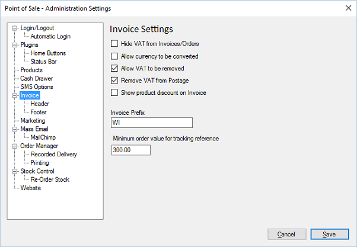

Invoice settings determine how invoices are viewed

Hide VAT from Invoices/Orders. Does not show VAT on invoices
Allow currency to be converted. Allows currencies to be converted into other currencies.
Allow VAT to be removed. Allows VAT to be removed from invoices/orders.
Remove VAT from postage. VAT is removed from postage.
Show product discount on invoice. Shows the discount if there is one.
Invoice Prefix. Letters/Numbers to prefix any invoice
Minimum order value for tracking reference. Invoices being Dispatch Orders will not
require a tracking reference if the order is below this value.